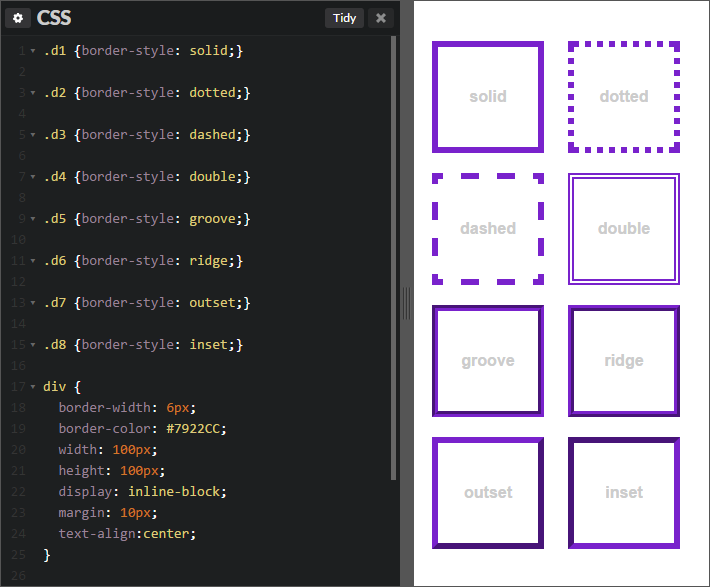

В этой главе вы узнаете, как можно настраивать и изменять вид блоков с содержимым на веб-странице и какие свойства CSS
для этого используются. Для удобства данная глава разделена на отдельные подглавы, в каждой из которых объясняются
методы работы с блоками. Прочитав эту главу, у вас улучшится представление того, как располагаются элементы на
веб-странице и как можно ими управлять.
Свойство border: границы для блоков

Несколькими уроками ранее мы рассматривали схематическое изображение блока веб-страницы, а также вкратце рассказывали о
таком свойстве CSS как border, с помощью которого можно задать границы для элемента. В этот раз мы более детально
рассмотрим это свойство на примерах.
Граница располагается между полем и отступом.
Это значит, что margin находится за границей. Границу можно задавать как
со всех четырех сторон (как бы заключая блок в рамку), так и с одной, двух или трех сторон. В CSS можно управлять
толщиной, цветом и стилем границ.
Border-radius: закругленные углы в CSS
Закругление углов в CSS можно сделать для любого элемента HTML-страницы. Для этого необходимо применить к нему свойство
border-radius с соответствующим значением. Чаще всего значение указывается в пикселях, но можно также использовать и
другие единицы, например, em или проценты (в последнем случае вычисление производится относительно ширины блока).
Эффект данного свойства будет заметен только при условии, что у стилизуемого элемента имеется цветной фон и/или граница.
Overflow: управление переполненными элементами
Быть может, вы уже сталкивались с ситуацией, когда контент определенного элемента словно выходит за его пределы.
Это
часто случается, если размеры содержимого оказываются больше, чем размеры контейнера, в котором оно находится.
hidden — всё содержимое, выходящее за пределы контейнера, будет скрыто. Не подходит в случае с текстовым контентом, но
очень часто используется на практике для решения других задач и предотвращения некоторых «казусов».
scroll — к контейнеру будут добавлены вертикальные и горизонтальные полосы прокрутки (скролл). Внешне блок становится
похож на фрейм. Скролл отображается постоянно.
auto — также добавляются полосы скролла, но только тогда, когда они необходимы (т. е. если содержимое не влазит в
контейнер).
visible — значение, установленное по умолчанию в браузере. Контент виден, даже если блок переполнен. Можно использовать
для сброса другого значения, заданного ранее.